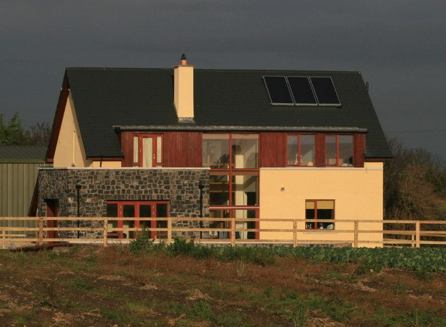

아일랜드, 가정용 콘센트에 꽂는 '플러그인 태양광' 도입 길 열려…ESB 네트웍스 보고서 "안전한 경로 있다"

정부 요청으로 꾸린 작업반 보고서 10월 1일 기후·에너지·환경부에 제출…독립 안전성 평가·법령 검토 거쳐 내각 상정, 800W 이하 시스템 검토
아일랜드에서 집 안 콘센트에 꽂아 쓰는 플러그인 태양광을 허용할 길이 열렸다. 정부가 맡긴 타당성 검토에서 배전망 운영사 ESB 네트웍스(ESB Networks)가 도입을 받아들일 수 있다는 결론을 냈기 때문이다. ESB 네트웍스는 올해 초 정부 요청으로 작업반을 꾸려 플러그인 태양광의 타당성을 따져 왔고, 보고서를 10월 1일 기후·에너지·환경부에 냈다. 기후·에너지·환경부 대변인은 독립 안전성 평가와 법령 검토를 거치면 이 기술을 안전하게 들여올 경로가 있다는 것이 보고서의 판단이라고 확인했다. 보고서는 아직 내각에 올라가지 않았으며, 내각 승인이 나면 가정에서 일반 콘센트에 플러그인 태양광을 연결해 쓸 수 있게 된다. 정부는 800W 이하 시스템을 검토하고 있다.
시민에너지 관점
미국 일부 주와 영국에 이어 아일랜드도 배전망 운영사가 직접 플러그인 태양광의 안전한 도입 경로를 인정하면서, 아파트 베란다나 작은 집 마당에서 시민이 스스로 전기를 만드는 일이 유럽에서 제도의 문턱을 넘고 있다. 전력망 안전을 걱정하는 목소리가 있지만, 아일랜드는 금지 대신 독립 안전성 평가와 법령 정비라는 순서를 밟아 답을 찾고 있다. 지붕도 땅도 없는 세입자와 아파트 주민이 에너지 전환에서 소외되지 않으려면 큰 발전소가 아니라 이런 작은 설비부터 시민의 몫으로 열어 주어야 한다. 우리도 베란다형 태양광의 안전 기준과 연결 절차를 서둘러 마련해 누구나 생산자가 되는 길을 터야 한다.
출처: Kfm Radio 2026-10-23 Daniel Maher 원문 보기
アイルランド、家庭用コンセントに差し込む「プラグイン太陽光」導入に道…ESBネットワークス報告書「安全な道筋がある」
政府の要請で設けた作業部会の報告書を10月1日に気候・エネルギー・環境省へ提出…独立した安全性評価と法令見直しを経て閣議へ、800W以下のシステムを検討
アイルランドで、家のコンセントに差し込んで使うプラグイン太陽光を認める道が開けた。政府が委託した実現可能性の検討で、配電網運営会社ESBネットワークス（ESB Networks）が導入を受け入れられるとの結論を出したためだ。ESBネットワークスは今年初め、政府の要請で作業部会を設けてプラグイン太陽光の実現可能性を調べ、報告書を10月1日に気候・エネルギー・環境省へ提出した。同省の報道官は、独立した安全性評価と法令の見直しを経れば、この技術を安全に導入できる道筋があるというのが報告書の判断だと確認した。報告書はまだ閣議にかけられておらず、承認されれば家庭の一般コンセントにプラグイン太陽光をつないで使えるようになる。政府は800W以下のシステムを検討している。
市民エネルギーの視点
米国の一部の州や英国に続き、アイルランドでも配電網運営会社自らがプラグイン太陽光の安全な導入の道筋を認めたことで、マンションのベランダや小さな庭で市民が自ら電気をつくることが、欧州で制度の壁を越えつつある。電力網の安全を心配する声もあるが、アイルランドは禁止ではなく、独立した安全性評価と法令整備という手順を踏んで答えを探している。屋根も土地も持たない借家人やマンション住民がエネルギー転換から取り残されないためには、大規模発電所ではなく、こうした小さな設備から市民の手に開くべきだ。韓国もベランダ型太陽光の安全基準と接続手続きを急いで整え、誰もが生産者になれる道を開くべきだ。
出典: Kfm Radio 2026-10-23 Daniel Maher 原文を読む
爱尔兰为插入家用插座的"即插式光伏"打开大门…ESB Networks报告称"存在安全路径"
应政府要求成立的工作组于10月1日向气候、能源与环境部提交报告…经独立安全评估和法规审查后提交内阁，正在研究800瓦以下系统
爱尔兰允许插入家中插座使用的即插式光伏的道路已经打开。在政府委托的可行性审查中，配电网运营商ESB Networks得出了可以接受引入这项技术的结论。ESB Networks今年年初应政府要求成立工作组评估即插式光伏的可行性，并于10月1日向气候、能源与环境部提交了报告。该部发言人确认，报告的判断是：只要经过独立的安全评估和法规审查，就存在安全引入这项技术的路径。报告尚未提交内阁，一旦获批，家庭就可以把即插式光伏接到普通插座上使用。政府正在研究800瓦以下的系统。
市民能源视角
继美国部分州和英国之后，爱尔兰的配电网运营商也亲自认可了即插式光伏的安全引入路径，市民在公寓阳台或小院子里自己发电，正在欧洲跨过制度门槛。有人担心电网安全，但爱尔兰没有选择禁止，而是按照独立安全评估和法规完善的顺序寻找答案。要让既没有屋顶也没有土地的租户和公寓居民不被能源转型落下，就应当先把这类小型设备而不是大电站开放给市民。韩国也应尽快制定阳台光伏的安全标准和并网程序，打开人人都能成为生产者的道路。
来源: Kfm电台 2026-10-23 Daniel Maher 查看原文
Ireland opens the way to plug-in solar for household sockets as ESB Networks report finds a "safe pathway"
Working group set up at the Government's request submitted its report to the Department of Climate, Energy and the Environment on 1 October; independent safety assessment and legislative review to come before Cabinet, with systems up to 800W under review
Ireland has moved a step closer to allowing plug-in solar panels that connect to an ordinary socket at home, after a feasibility review ordered by the Government concluded that the technology can be introduced. Distribution network operator ESB Networks set up a working group earlier this year at the Government's request to assess plug-in solar, and submitted its report to the Department of Climate, Energy and the Environment on 1 October. A department spokesperson confirmed the report found a safe pathway for introducing the technology once an independent safety assessment and a legislative review have been carried out. The report has not yet gone to Cabinet; once it is approved, households will be able to plug solar units into a standard socket. The Government is reviewing systems of up to 800 watts.
Citizen Energy View
After some US states and the UK, Ireland's own grid operator has now accepted a safe route for plug-in solar, and citizens generating their own power on apartment balconies and in small gardens is clearing regulatory hurdles across Europe. Some worry about grid safety, but Ireland is answering that concern through independent safety assessment and legal reform rather than a ban. If renters and apartment dwellers with no roof or land of their own are not to be left out of the energy transition, small systems like these, not just large power plants, must be opened up to citizens first. Korea, too, should move quickly to set safety standards and connection rules for balcony solar so that anyone can become a producer.
Source: Kfm Radio 2026-10-23 Daniel Maher Read the original